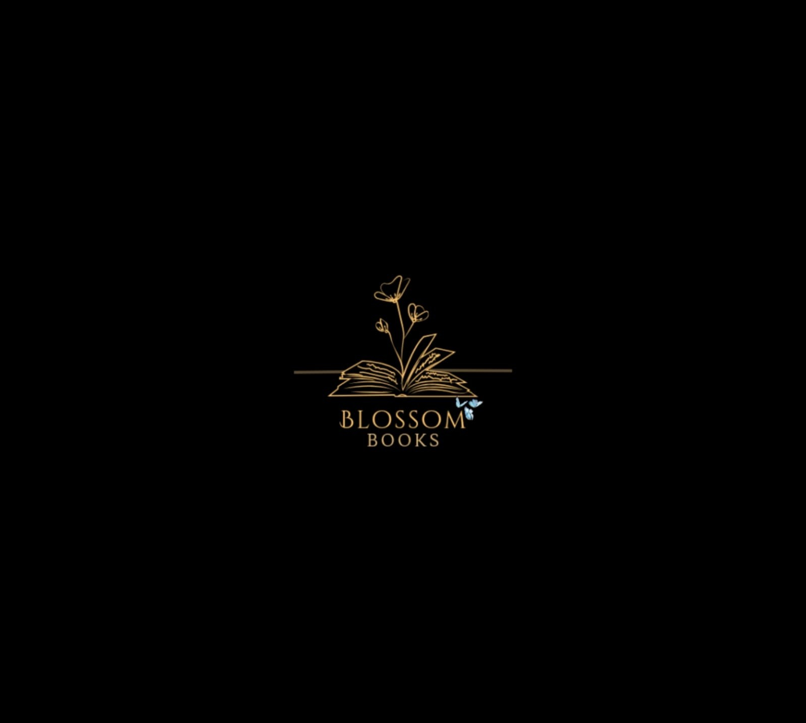
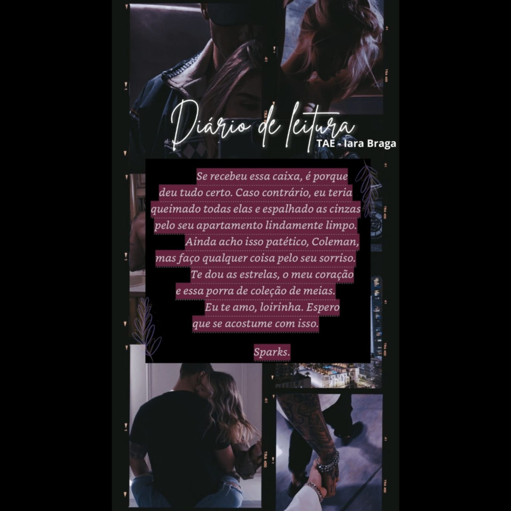
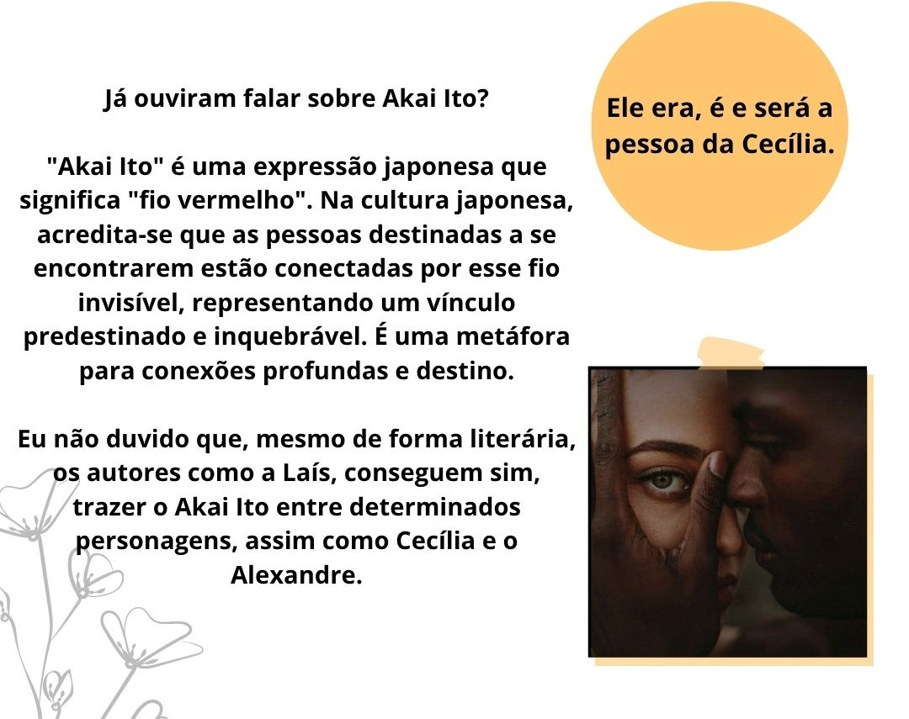
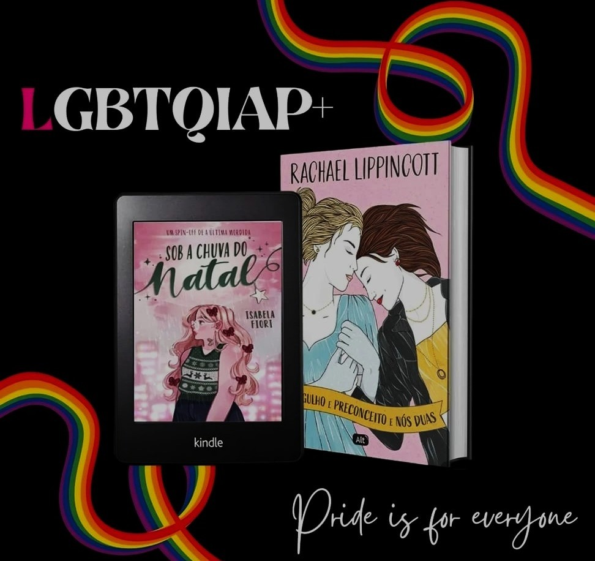
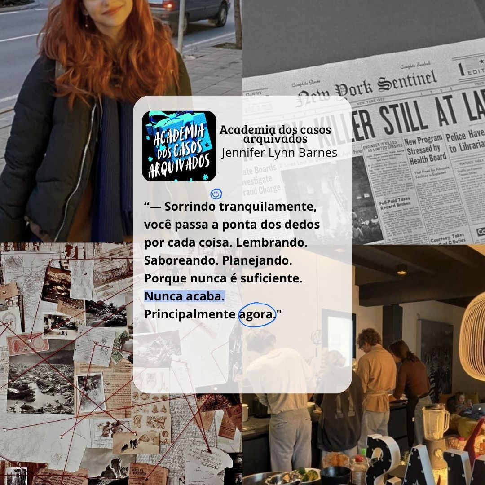

Descrição do projeto
Uma comunidade criada paraconectar leitores
A Blossom Books nasceu como um projeto autoral criado para transformar a leitura em uma experiência mais leve e compartilhada. Um espaço para conversar sobre livros, trocar opiniões e criar conexões entre leitores sem cobranças, regras ou julgamentos.
Objetivo
Criar uma comunidade literária acolhedora, onde leitores pudessem compartilhar suas experiências, descobrir novas histórias e conversar sobre livros de forma livre, sem a pressão de ler determinado gênero, seguir tendências ou ter opiniões “certas”.
Processo criativo
O projeto foi desenvolvido a partir da ideia de aproximar pessoas por meio dos livros, criando uma comunicação mais humana e acessível. Foram pensados formatos de conteúdo, identidade visual e uma linguagem própria para incentivar conversas, trocas de opiniões e interação entre leitores.




Resultados
A Blossom Books se tornou um espaço de conexão entre leitores, unindo conteúdo literário e comunidade para mostrar que a leitura também pode ser uma experiência de troca, diversão e pertencimento.